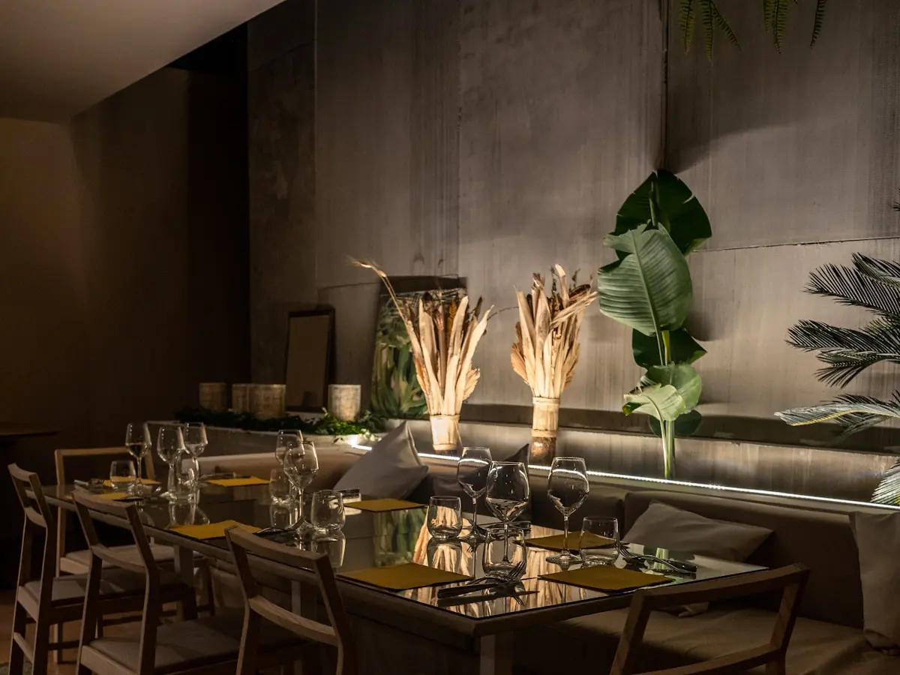
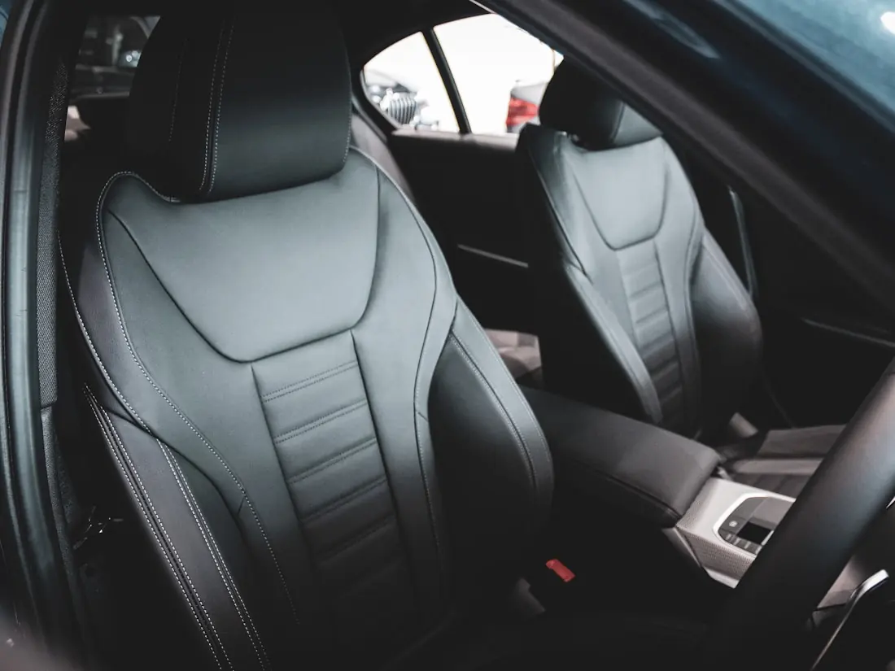

Economize
Valor excepcional. Acesso a procedimentos estéticos de alta qualidade no Brasil, com economia que pode ser significativa em relação aos preços praticados nos Estados Unidos.
Cuidado estético excepcional no Brasil, uma economia que pode ser relevante e uma viagem montada em torno de você: o médico, o procedimento, o hotel, o transporte, as refeições, a recuperação e tudo o que você de fato vai querer conhecer.
Save. Refresh. Experience Brazil.
A RefreshU é uma plataforma de concierge médico, encaminhamento e coordenação de viagem. O cuidado médico é prestado por médicos e clínicas independentes, que decidem elegibilidade, tratamento e todo requisito clínico.
Valor excepcional. Acesso a procedimentos estéticos de alta qualidade no Brasil, com economia que pode ser significativa em relação aos preços praticados nos Estados Unidos.
Cuidado excepcional. Médicos independentes com registro, qualificação e filiações verificados antes da publicação, e uma jornada coordenada do primeiro encaminhamento ao último acompanhamento.
Uma viagem inesquecível. A viagem que você precisa fazer vira uma viagem que vale a pena fazer: bons hotéis, restaurantes, bairros, cultura, praias e um tempo que cabe na sua recuperação.
O procedimento é o motivo da viagem.
A RefreshU faz a viagem inteira valer a pena.
Você já está considerando gastar esse dinheiro em um procedimento. A pergunta de verdade é o que esse mesmo dinheiro compra através da RefreshU.
Agora imagine o que mais você poderia viver com a diferença.
Todos os valores e a metodologia de comparação exigem fonte defensável e aprovação jurídica antes desta seção ir ao ar.
Não gaste o dinheiro só no procedimento. Tenha o procedimento e a experiência.
Começamos com duas verticais, cada uma construída em torno de médicos que realizam esses procedimentos toda semana.
Informação educativa geral. Só um médico pode determinar se um procedimento é adequado para você.
Corpo, odontologia, dermatologia, bem-estar e outras verticais estéticas estão previstas, e a plataforma já foi construída para recebê-las.
Cinco níveis de suporte de concierge. Procedimentos e serviços médicos nunca fazem parte de um pacote RefreshU, são prestados e cobrados à parte por médicos e clínicas independentes.
Para quem viaja por conta própria e quer os detalhes importantes organizados sem abrir mão da flexibilidade.
A experiência completa, coordenada da chegada à partida. Tudo do Essential, mais:
Nosso nível mais alto de suporte personalizado. Tudo do Signature, mais:
O concierge dedicado da RefreshU é um profissional de hospitalidade e logística, não é enfermeiro particular nem profissional de saúde.
Para casais, amigos ou família viajando juntos, seja uma pessoa ou várias sendo atendidas por profissionais participantes.
Cada pessoa que recebe serviços médicos faz a própria análise médica, a própria documentação, os próprios consentimentos, o próprio contrato com o profissional e o próprio pagamento médico. A decisão do médico sobre uma pessoa não vale para outro viajante.
Uma experiência totalmente sob medida quando as necessidades de viagem, hospedagem, acompanhante ou estilo de vida vão além dos pacotes padrão.
Serviços sob medida são orçados individualmente e aparecem no seu Resumo de Serviços antes da compra.
Consulta médica, avaliação médica e definição de elegibilidade, cirurgia ou procedimento, anestesia ou sedação, serviços hospitalares, exames laboratoriais e de diagnóstico, interpretação de resultados, prescrição e escolha de medicamentos, enfermagem clínica, liberação médica, consentimento informado clínico, cuidado pós-operatório e manejo de complicações, e atendimento de emergência. Tudo isso é prestado e cobrado à parte por profissionais de saúde independentes.
Nove passos, um coordenador e uma linha clara entre o que cuidamos e o que o médico decide.
Conheça os procedimentos e conte o que importa para você.
Seu questionário e suas fotos vão direto para o médico, no sistema dele. Nada disso passa pela RefreshU.
Um médico participante analisa suas informações. A RefreshU não toma a decisão médica.
Converse sobre a experiência, o destino, os serviços de concierge, os preços gerais, a economia potencial, as expectativas da viagem, os pacotes e os próximos passos.
O médico cuida da elegibilidade, do plano de tratamento, dos riscos, dos exames, das orientações e de toda dúvida clínica.
Viagem, hotel, transporte, consultas, serviços de concierge, restaurantes, compras, atrações, bem-estar e atividades compatíveis com a recuperação.
A experiência de concierge começa no momento em que você pousa.
Aproveite o Brasil antes e depois do procedimento, conforme a liberação do seu médico.
A RefreshU coordena a partida e a logística de acompanhamento que for aplicável.
Se você já vai pegar um avião para fazer o procedimento, por que a viagem não seria extraordinária?

Gastronomia, arquitetura, compras, praias, natureza, cultura, hotéis, bem-estar, vida noturna quando apropriado, e a hospitalidade brasileira que segura tudo isso junto.
O procedimento cria o motivo para viajar. A RefreshU transforma a viagem em experiência.
A experiência de viagem sempre se adapta ao que o médico exige, nunca o contrário.
Cronograma médico + cronograma de viagem + suas preferências = seu roteiro RefreshU
Isto é uma ilustração. Seu roteiro segue as orientações do seu médico e se move junto com elas.
A RefreshU não é um diretório. Cada médico participante é avaliado e apresentado por inteiro, para que a pessoa que vai operar você nunca seja um nome desconhecido em uma agenda.
Iniciar minha avaliaçãoA RefreshU opera experiências de concierge em duas cidades brasileiras. Você escolhe em qual quer montar a sua estadia, e a experiência de concierge é a mesma nas duas.
Hotéis premium escolhidos pelo conforto durante a recuperação, pela proximidade da sua clínica e por um bairro que vale caminhar.
Restaurantes e comida brasileira, do dia a dia à reserva que você vai contar para os outros, com entrega de refeições nos dias em que você deve descansar.
Bairros, museus, parques, compras e bem-estar, filtrados pelo que a sua recuperação permite em cada dia.
Clínicas, consultas, exames pré-operatórios e o próprio procedimento, reunidos em uma agenda só.
Transporte, reservas e o contato único que conhece a sua semana inteira.
Jardins, Itaim Bibi, Vila Nova Conceição e Alto de Pinheiros. Alta gastronomia, Ibirapuera, MASP, Oscar Freire e a rota do vinho de São Roque a uma hora dali.
Ipanema, Leblon, Copacabana e Jardim Botânico. Pão de Açúcar, Cristo Redentor, Jardim Botânico, Parque Lage e a praia quando o seu médico liberar.
Bairros, lugares e trajetos são selecionados pelo concierge. Nenhuma área é descrita como totalmente segura, e transporte privativo porta a porta é recomendado à noite.
Você não deveria precisar de cinco aplicativos, vinte e-mails e uma planilha. Seu concierge é um ponto de contato único para a experiência inteira.
Transfer do aeroporto, hotel, clínica e motorista particular.
Recomendações, reservas e entrega de refeições.
Restaurantes, compras, museus, passeios, atrações locais e atividades compatíveis com a recuperação.
Barbeiro, cabeleireiro, unhas, cílios e profissionais de bem-estar aprovados.
Lavanderia, compras, roupas e apoio na farmácia para itens prescritos pelo médico.
Profissionais de recuperação qualificados quando apropriado, serviços aprovados pelo médico e transporte para o retorno.

Onde for legalmente permitido e solicitado pelo seu médico, profissionais qualificados podem atender você no hotel: coleta de sangue, serviços laboratoriais, exames básicos solicitados pelo médico, eletrocardiograma quando prestado de forma adequada, visita de enfermagem e suporte de recuperação aprovado pelo médico.
A RefreshU cuida da logística. O médico e a clínica controlam todas as exigências clínicas.
Esperando por você no check-in, montado para os dias em que se vestir não deveria dar trabalho.
Um procedimento, várias formas de viajar. Todo pacote pode incluir um acompanhante ou um familiar.
Um paciente, com procedimento, concierge e viagem.
Dois viajantes, com um ou mais serviços.
Paciente com acompanhante.
Hotel, transporte, hospitalidade e concierge aprimorados.
Hospedagem de alto padrão, transporte privativo, gastronomia premium e experiências selecionadas.
E, se a pessoa quiser, convidá-la a conhecer um tratamento também.
A maioria compra o procedimento em um lugar e a viagem em outro, e passa a semana segurando os dois. Aqui os dois chegam como uma coisa só.
Controlado pelo médico e pela clínica, da elegibilidade à alta.
Brasil, voos, hotéis, restaurantes, destinos e experiências.
A RefreshU coordena tudo em volta da jornada, para você não carregar nada disso.
O mesmo dinheiro pode comprar muito mais do que só o procedimento. Faça o tratamento que você vem considerando e viva o Brasil, com um concierge coordenando a jornada inteira. Qualquer comparação com preços dos Estados Unidos é publicada apenas com a fonte e a metodologia.
Médico, viagem, concierge e valor, dentro de uma única jornada coordenada.
O procedimento e a viagem devem parecer uma experiência só, não duas compras separadas.
Só aparece aqui o que conseguimos sustentar. Certificações em andamento não são exibidas antes de serem conquistadas.
A RefreshU não se descreve como certificada, aprovada ou verificada pela HIPAA, e não exibe como sua uma acreditação que pertence a um profissional.
Seis etapas: seu interesse, o procedimento, sobre você, uma anamnese aprovada pelo médico, suas fotos e o envio para análise médica.
Iniciar minha avaliaçãoSuas informações são enviadas para análise médica. A RefreshU não toma decisões clínicas e não promete resultado clínico.
Um médico participante, depois de analisar seu questionário e suas fotos. A RefreshU coordena a jornada e nunca toma a decisão médica.
Não no sentido em que essa expressão costuma ser usada. A RefreshU é um serviço de concierge construído em torno de uma jornada conduzida por médico, em que a viagem é desenhada e não improvisada.
Depende do procedimento e daquilo com que você compara. Só publicamos comparações quando os valores e a metodologia podem ser verificados e aprovados.
Pode. Os pacotes comportam companheiro, amigo ou família, e o acompanhante pode conhecer um tratamento próprio se quiser.
Elas são coletadas em um questionário privado e enviadas para análise do médico responsável pelo seu caso.
Atrasos e cancelamentos podem afetar o cronograma médico, e a cobertura real depende da apólice de cada pessoa. A RefreshU não promete reembolso.